How to use this pack Show pages. Ask the question printed on each page. Get a tick or a
circle in under ten seconds. Cut sheets live at the back — scissors welcome.
Tally page is p.20. Every design element has an ID (W…, C…, S…) so
a tick is enough.
Tone ramp (nominal % black) and pattern fills.
If steps 10–30 merge or 70–90 fill in, note it here and the Monday colour
iteration compensates.
0
10
20
30
40
50
60
70
80
90
100
hatch 2.2mm
hatch 1.2mm
hatch heavy
crosshatch
Everything stated in this pack is true of
build v0.14.4 unless it is printed as a question. The licence is source-available; the
game is an alpha; nobody is promised a win screen, because there isn't one.
p(Doom)1 field pack · 1/30
What is p(Doom)1?
the honest one-pager · hand this page to a stranger
Run an underfunded AI safety lab and hold off catastrophe for as long as you can.
You run an underfunded AI safety lab while better-resourced rivals race toward AGI. There is no win screen — alignment is not a thing you finish. You hire researchers, balance their traits, handle burnout, poaching and rival-lab events, and buy time against a rising p(Doom). Every run ends in defeat; your score is the number of turns you survived, and the end screen attributes honestly what killed you.
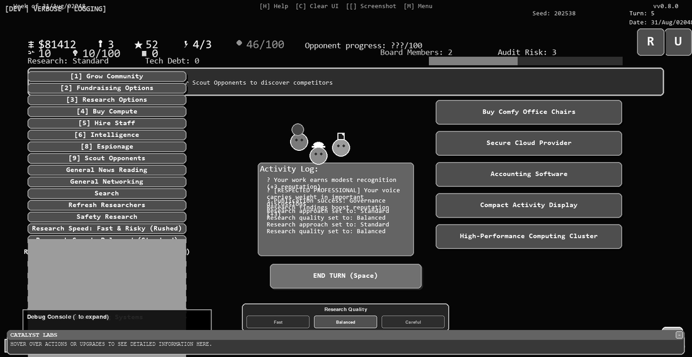
Actual alpha interface, v0.14 — the game runs dark; this is what
it looks like pushed through a mono laser.
Turn-based strategy, single player. Hire researchers from a candidate pool (Safety, Capabilities, Interpretability, Alignment); teams of up to 8 per manager.
Researchers have traits — team player, media savvy, leak-prone — and can burn out or be poached by rival labs.
Random events and rival-lab actions land every run. Doom rises from reckless research.
There is no victory condition. Score = turns survived. The end screen tells you what killed you, honestly.
Deterministic seeds: a given seed plays identically for everyone, so scores are comparable.
Report a bug from inside the game (press N) — and your cat can be drawn into the game as an Office Cat, with five doom-level variants, plus a credits listing.
Status, stated plainly
Alpha, v0.14.4, built in Godot 4.5.1. Published for Windows, macOS and Linux; the
Windows build is the most tested. Builds are not yet code-signed, so
your OS will warn you the developer is unidentified — that is expected, and the
website walks you past it.
Licence, stated plainly
Source-available. Not open source, and we won't call it that. The source is
public to read and contribute to; no licence is granted to redistribute or sell. A
formal open-source licence for the engine is planned around 1.0.
coordination#66 made physical · tick any you'd stop for · X any you hate
p(Doom)1
W1 · URW Gothic
geometric · Bauhaus lineage (Avant Garde)
W1
P(DOOM)1
W2 · URW Gothic
geometric caps, letterspaced
W2
p(Doom)1
W3 · Nimbus Sans
grotesque · neutral, industrial
W3
P(DOOM)1
W4 · Liberation Sans Narrow
condensed poster caps
W4
p(doom)1
W5 · Liberation Mono
terminal · matches the game's shipping mono UI
W5
p(doom)1
W6 · DejaVu Sans Mono
terminal alt — a face the game itself falls back to
W6
p(Doom)1
W7 · C059
bookish serif — the control nobody expects
W7
p(Doom)1
W8 · Quicksand
rounded geometric — nearest kin of the current tile
W8
All faces licensed/installed locally; the winner gets bought properly if it needs to be. Casing is a separate question — next page but one.
3/30
Wordmark, survival test
same four candidates at 8pt, reversed, and at card scale — a mark that dies small is dead
W1
p(Doom)1p(Doom)1p(Doom)1
p(Doom)1
p(Doom)1
Pip Foweraker · pdoom1.com
business-card scale
W4
P(DOOM)1P(DOOM)1P(DOOM)1
P(DOOM)1
P(DOOM)1
Pip Foweraker · pdoom1.com
business-card scale
W5
p(doom)1p(doom)1p(doom)1
p(doom)1
p(doom)1
Pip Foweraker · pdoom1.com
business-card scale
W3
p(Doom)1p(Doom)1p(Doom)1
p(Doom)1
p(Doom)1
Pip Foweraker · pdoom1.com
business-card scale
W0
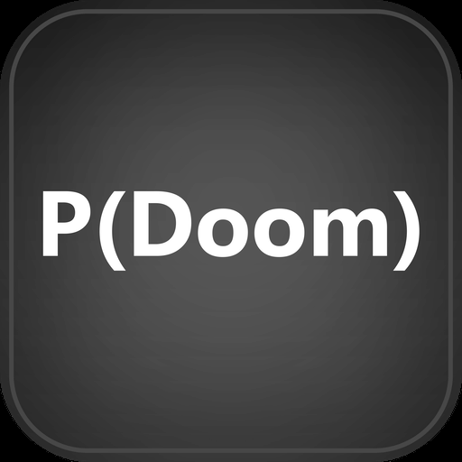
The tile that already lives in the game repo.
It has been size-culled but never approved as a design (coordination#66). It runs as a
candidate here like everything else — no incumbency privileges.
4/30
The casing question
these all currently coexist in the estate — one of them should win. Circle or tick.
p(Doom)1
N1
the website's usage
N1
P(Doom)
N2
the game repo's title usage
N2
pdoom1
N3
the domain and the repo slug
N3
P(DOOM)1
N4
poster caps — used nowhere yet
N4
p(doom)
N5
the lowercase term of art, as the field writes it
N5
True statement: the project has never decided this. Your tick is a real input.
5/30
Tagline face-off
every one of these is true of the build — which one makes you look up?
T1
Run an underfunded AI safety lab. Hold off catastrophe for as long as you can.
T2
Every run ends in defeat. Your score is how long you lasted.
T3
Alignment is not a thing you finish. Buy time.
T4
Made with coffee and existential dread.
T5
The end screen tells you what killed you. Honestly.
T6
How many turns can you buy?
Got a better one? It has to be true. There is no
win screen, it is an alpha, and it is source-available — write inside the rails:
6/30
Body type — which would you read a rulebook in?
same paragraph, three settings · tick the one your eyes forgave
B1 · Liberation Mono · terminal mono — what the game UI actually shipsB1
You run an underfunded AI safety lab while better-resourced rivals race toward AGI. There is no win screen — alignment is not a thing you finish. You hire researchers, balance their traits, handle burnout, poaching and rival-lab events, and buy time against a rising p(Doom). Every run ends in defeat; your score is the number of turns you survived, and the end screen attributes honestly what killed you.
B2 · Nimbus Sans · grotesque — the quiet professionalB2
You run an underfunded AI safety lab while better-resourced rivals race toward AGI. There is no win screen — alignment is not a thing you finish. You hire researchers, balance their traits, handle burnout, poaching and rival-lab events, and buy time against a rising p(Doom). Every run ends in defeat; your score is the number of turns you survived, and the end screen attributes honestly what killed you.
B3 · C059 · book serif — reads like a rulebookB3
You run an underfunded AI safety lab while better-resourced rivals race toward AGI. There is no win screen — alignment is not a thing you finish. You hire researchers, balance their traits, handle burnout, poaching and rival-lab events, and buy time against a rising p(Doom). Every run ends in defeat; your score is the number of turns you survived, and the end screen attributes honestly what killed you.
Line length, size and leading held comparable; only the face changes. This decides manuals, the website body, and slip copy.
7/30
Marks & emblems
the thing that goes on a sticker, a favicon, a shirt · tick any
M0 · current game icon (mountain-and-graph emblem). Prints
as a heavy toner disc; survives, at a cost.
M0
M1 · current wordmark tile (unapproved, see p.4).
M1
M2 · NEW — the doom dial as a mark. Needle parked in
the black. Pure line and tone; laughs at mono lasers.
M2
M3 · NEW — p( • ): the probability that dare not
speak its value. Geometric, Bauhaus-honest, one glyph from being a logo.
M3
M4 · the office cat as mascot-mark (from the game's icon
set). Dark tile; would be redrawn as linework for print.
M4
A mark must survive: 12mm on a business
card, reversed white-on-black, one colour, and a bad photocopy. M2 and M3 were drawn
under those rules. M0, M1 and M4 predate them.
8/30
Which face fronts the poster?
real in-game dossier portraits, straight off the mono laser · tick up to two
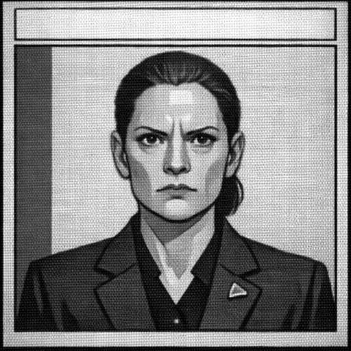
R1 · the authoritarian pessimistR1
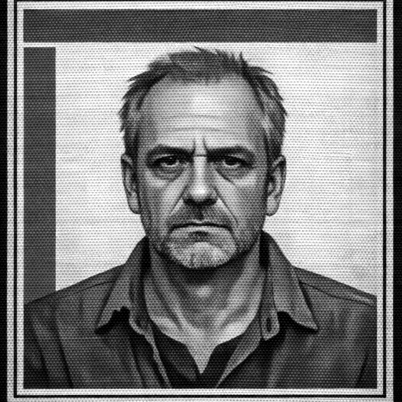
R2 · the burned-out seniorR2
R3 · the capabilities optimistR3
R4 · the moral crusaderR4
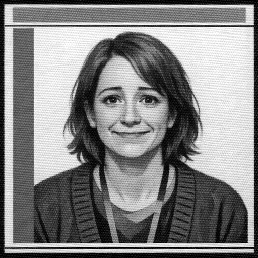
R5 · the people pleaserR5
These are researcher archetypes you actually
hire in the game. They were painted dossier-style and convert to greyscale better than
anything else in the repo — which is why this whole pack leans on them.
Bonus question: which one is you? Write their R-number here:
9/30
Event art — which scene sells the mood?
in-game event illustrations · tick any that pull you in
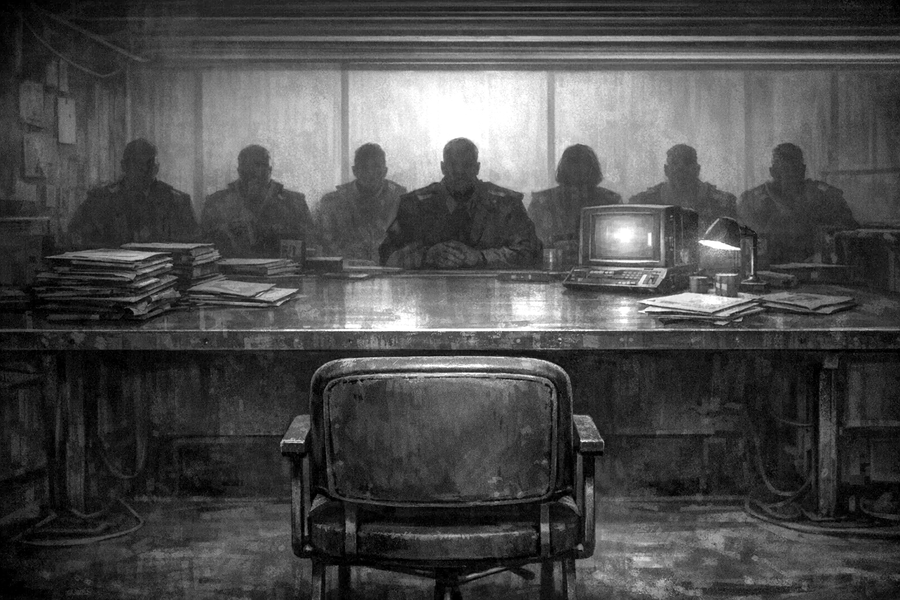
E1 · the board convenes (reads well in grey)E1
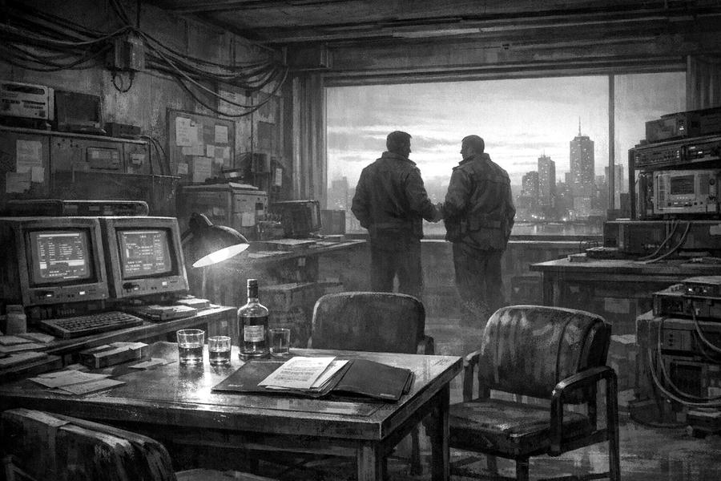
E2 · an opportunity, maybe (reads well in grey)E2
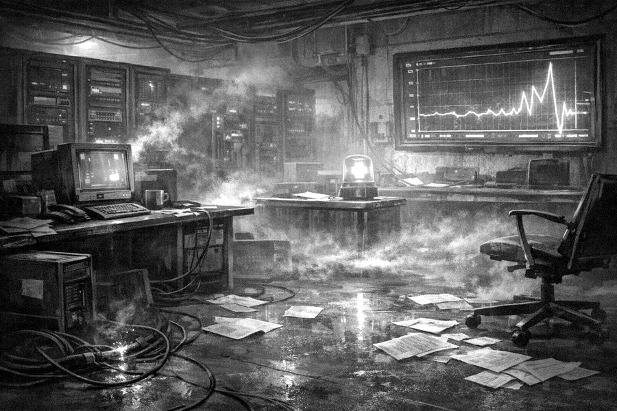
E3 · the graph does a thing (dark — shadows lifted for print)E3
E4 · the filing cabinet knows (very dark — heaviest lift in the pack)E4
Honesty note: E3 and E4 are far darker in the game than shown; their shadows were lifted so a mono laser could hold them at all. The originals would print as toner floods.
10/30
Cat referendum
tick exactly one. we know this is the page people will fight over
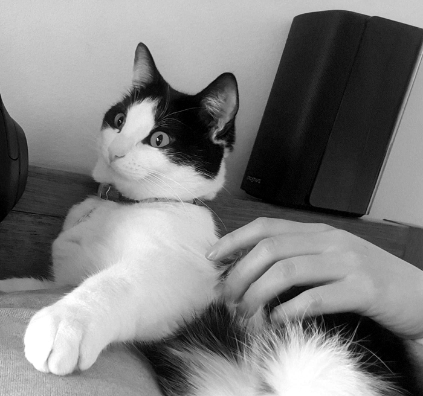
K1 · the real office cat (photograph)K1
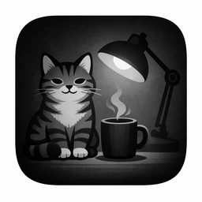
K2 · icon-set cat, with lamp and coffeeK2
K3 · icon-set cat, portrait tileK3
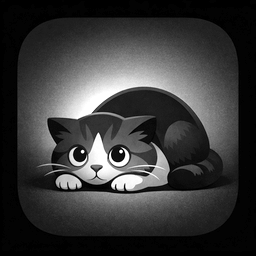
K4 · icon-set cat, doom variantK4
True and standing offer: report a bug
(press N in-game) or help playtest, and your own cat can be drawn into the game as an
Office Cat — five doom-level variants, credits listing included.
11/30
Business card face-off
five designs at true size · tick the one you'd keep in your wallet
$ run lab --underfunded
> doom is rising
> there is no win state
> survive more turns
pip foweraker · pdoom1.com
[alpha]
C2 · terminal ·
cut-sheet p.24C2
P(DOOM)1
EVERY RUN ENDS IN DEFEAT.
YOUR SCORE IS HOW LONG YOU LASTED.
pdoom1.com · source-available alpha
C3 · condensed ·
cut-sheet p.25C3
p(Doom)1
hold off catastrophe as long as you can
pdoom1.com · Pip Foweraker · alpha
C4 · dial ·
cut-sheet p.26C4
p(Doom)1
the office cat requests playtesters
pdoom1.com
C5 · cat ·
cut-sheet p.27C5
Each design has its own uncut sheet of ten
at the back of the pack (pages 23–27) — scissors turn a tick into a
pocketful. The sampler sheet p.27 carries two of each for pocket A/B tests.
12/30
P(DOOM) RATING TODAY
SOURCE-AVAILABLE ALPHA · PDOOM1.COM
CUT along the outer solid border of this whole panel. The dotted circle at the dial's
hinge is the pivot — assembly and pointer are on the next page. Sign modelled, with
respect and one addition, on the Australian fire danger rating sign; the addition is the
band the fire signs never needed.
the needle only ratchets clockwise* *mechanically untrue, thematically accurate
13/30
Dial assembly
one pointer, one stand, four steps, zero excuses
Two pointers because the first one always gets bent in the bag.
tape here
easel spine
foot
STAND — cut out, fold on dashed lines into a Z, tape the first panel to the
sign's back. The dial now stands on a table.
Assembly
Cut out the sign (p.13) on its solid border.
Cut out one pointer; punch the marked pivot holes in pointer and sign
(hole punch, or a pen nib on a soft surface).
Fasten with a split pin / brass fastener. No pin? Unbend one loop of a
paperclip through both holes and tape the back.
Fold the stand, tape it on, stand it next to the clipboard. Invite
strangers to set today's rating. Do not reassure them.
Prints better on card stock.
Ordinary paper works if you laminate it or back it with the cereal box you were
going to recycle anyway.
factory setting
14/30
Pocket doom dials
cut the four cards · hand a pen to a stranger · they draw their own needle and keep it
MY P(DOOM)
date:
initials:
draw your needle on the dial · keep the card · pdoom1.com
MY P(DOOM)
date:
initials:
draw your needle on the dial · keep the card · pdoom1.com
MY P(DOOM)
date:
initials:
draw your needle on the dial · keep the card · pdoom1.com
MY P(DOOM)
date:
initials:
draw your needle on the dial · keep the card · pdoom1.com
Why this works: nobody
will tell you their p(doom), but everybody will draw it. The card is a souvenir, the
URL is on the souvenir, and the conversation has already happened. Restock from p.15
of this pack.
15/30
p(Doom)1
Run an underfunded AI safety lab and hold off catastrophe for as long as you can.
pdoom1.com · source-available alpha
ASK ME ABOUT THE GAME YOU CANNOT WIN
p(Doom)1 · pdoom1.com
BASE FLAP — fold both dashed lines the
same way, tape this flap under the first panel: triangle tent, two faces, stands on any
table. Faces read correctly from both sides.
16/30
4 · the fairness
Deterministic seeds: a given seed plays out identically for everyone. Scores are comparable. Your defeat and my defeat can be measured against each other, which is its own comfort.
3 · the catch
There is no win screen. Every run ends in defeat. Your score is the number of turns you survived, and the end screen tells you honestly what killed you.
2 · the work
Hire researchers — Safety, Capabilities, Interpretability, Alignment. Balance their traits. Handle burnout and poaching. Respond to rival labs and to events you did not choose.
1 · the premise
You run an underfunded AI safety lab. Better-resourced rivals are racing toward AGI. Your job is not to win — alignment is not a thing you finish. Your job is to buy time.
5 · the cat
Report a bug (press N in-game) or help playtest, and your actual cat can be drawn into the game as an Office Cat with five doom-level variants. This is a real program with credits listings.
6 · the status
Alpha, v0.14.4, built in Godot 4.5.1. Windows / macOS / Linux, free download. Source-available — not open source; the source is public to read, and an open-source engine licence is planned around 1.0. Builds are not yet code-signed; your OS will grumble once.
ONE-CUT ZINE: fold in half long-ways, cut the heavy line, fold into an 8-page A7 booklet
(fold lengthwise, push ends inward so the slit opens, wrap flat). Top row is upside down
on purpose.
17/30
Sixty-second survey
clipboard page · tick fast, no wrong answers, one page then flip
1. Had you heard the term “p(doom)” before today?
yesnoheard it, couldn't define it
2. A strategy game where every run ends in defeat and the
score is how long you lasted. Gut reaction?
bleak, love itbleak, hate itroguelike players eat this dailyneed to see it
3. Where would you play it?
WindowsmacOSLinuxbrowserphoneSteam Deck
4. Mark today's personal p(doom) on the dial:
5. Would you playtest an alpha?
yesnoonly if the cat program is real (it is)
6. Optional — where should the playtest invite go?
(used for that one invite, nothing else)
collected on paper by Pip Foweraker · pdoom1.com
18/30
Where would you look for it?
distribution is a decision we haven't made — your tick is data
1. You hear about an indie AI-lab strategy game. Where do
you go first?
Steam
itch.io
the game's own website
GitHub releases
a browser version, no download
phone app store
I wait for a friend to make me
2. What would you type into a search box to find it?
3. Fair price for the finished 1.0, one honest tick:
free foreverpay-what-you-want$5$10$20depends on hours of play
4. The alpha today is a free download from GitHub via
pdoom1.com. Does knowing that change your answer to Q3?
noyes, higheryes, lowerstop asking hard questions
Everything above is a question about the future,
not a promise. Current truth: free source-available alpha, downloadable now for
Windows, macOS and Linux.
19/30
Tally & field notes
five-bar-gate the ticks per ID as you go, or at the cafe after
W1
W2
W3
W4
W5
W6
W7
W8
N1
N2
N3
N4
N5
T1
T2
T3
T4
T5
T6
B1
B2
B3
M0
M1
M2
M3
M4
R1
R2
R3
R4
R5
E1
E2
E3
E4
K1
K2
K3
K4
C1
C2
C3
C4
C5
P1
P2
P3
P4
S1
S2
S3
Things people actually said
20/30
p(Doom)1
EVERY RUN ENDS IN DEFEAT. YOUR SCORE IS HOW LONG YOU LASTED.
pdoom1.com · free source-available alpha Windows / macOS / Linux
P1
YOUR SENIOR RESEARCHER IS BURNED OUT. YOUR RIVALS' AREN'T.
p(Doom)1
pdoom1.com
P2
Poster pair · shown at 68% · tick the one that would stop you in a corridor.
21/30
P(DOOM) RATING TODAY
(mark it yourself — pen on a string optional)
THE GAME ABOUT MOVING THIS NEEDLE IS CALLED p(Doom)1
pdoom1.com · source-available alpha
P3
THE BOARD WILL SEE YOU NOW.
Rival labs act. Events land. Doom rises. You explain yourself.
p(Doom)1
pdoom1.com
P4
Poster pair · shown at 68% · tick the one that would stop you in a corridor.
$ run lab --underfunded
> doom is rising
> there is no win state
> survive more turns
pip foweraker · pdoom1.com
[alpha]
P(DOOM)1
EVERY RUN ENDS IN DEFEAT.
YOUR SCORE IS HOW LONG YOU LASTED.
pdoom1.com · source-available alpha
p(Doom)1
hold off catastrophe as long as you can
pdoom1.com · Pip Foweraker · alpha
p(Doom)1
the office cat requests playtesters
pdoom1.com
C5 · sampler · ten per sheet · cut on dashed lines
27/30
p(Doom)1
Run an underfunded AI safety lab and hold off catastrophe for as long as you can. Hire researchers, weather the events, watch the doom
meter climb. There is no win screen; your score is how long you lasted.
pdoom1.com · github.com/PipFoweraker/pdoom1
free download · Windows / macOS / Linux · source-available alpha v0.14.4
S1
p(Doom)1
Run an underfunded AI safety lab and hold off catastrophe for as long as you can. Hire researchers, weather the events, watch the doom
meter climb. There is no win screen; your score is how long you lasted.
pdoom1.com · github.com/PipFoweraker/pdoom1
free download · Windows / macOS / Linux · source-available alpha v0.14.4
S1
p(Doom)1
Run an underfunded AI safety lab and hold off catastrophe for as long as you can. Hire researchers, weather the events, watch the doom
meter climb. There is no win screen; your score is how long you lasted.
pdoom1.com · github.com/PipFoweraker/pdoom1
free download · Windows / macOS / Linux · source-available alpha v0.14.4
S1
S1 · general handout · three per page, cut on solid lines
28/30
BETWEEN ROUNDS? RUN AN AI LAB. LOSE SLOWER.
Turn-based lab management, single player, runs on a laptop that has
seen things. Draft researchers, manage burnout, answer to the board. Every run ends
in defeat — the score is turns survived, like a gauntlet you can brag about.
Deterministic seeds mean your loss and your mate's loss are comparable.
pdoom1.com · free alpha · report a bug in-game (press N) and your cat can
be drawn into the game
S2
BETWEEN ROUNDS? RUN AN AI LAB. LOSE SLOWER.
Turn-based lab management, single player, runs on a laptop that has
seen things. Draft researchers, manage burnout, answer to the board. Every run ends
in defeat — the score is turns survived, like a gauntlet you can brag about.
Deterministic seeds mean your loss and your mate's loss are comparable.
pdoom1.com · free alpha · report a bug in-game (press N) and your cat can
be drawn into the game
S2
BETWEEN ROUNDS? RUN AN AI LAB. LOSE SLOWER.
Turn-based lab management, single player, runs on a laptop that has
seen things. Draft researchers, manage burnout, answer to the board. Every run ends
in defeat — the score is turns survived, like a gauntlet you can brag about.
Deterministic seeds mean your loss and your mate's loss are comparable.
pdoom1.com · free alpha · report a bug in-game (press N) and your cat can
be drawn into the game
S2
S2 · tabletop-shop flavour · three per page, cut on solid lines
29/30
A GAME ABOUT THE ALIGNMENT PROBLEM
THAT REFUSES TO PRETEND YOU CAN WIN
p(Doom)1 is a strategy game: run an underfunded safety lab while
rivals race to AGI. Alignment is not a thing you finish, so the game doesn't let
you finish it — you buy time, and the end screen attributes your defeat
honestly. Alpha, source-available, free. Playtesters and bug reports genuinely
shape it — the in-game reporter is one keypress (N).
A GAME ABOUT THE ALIGNMENT PROBLEM
THAT REFUSES TO PRETEND YOU CAN WIN
p(Doom)1 is a strategy game: run an underfunded safety lab while
rivals race to AGI. Alignment is not a thing you finish, so the game doesn't let
you finish it — you buy time, and the end screen attributes your defeat
honestly. Alpha, source-available, free. Playtesters and bug reports genuinely
shape it — the in-game reporter is one keypress (N).
A GAME ABOUT THE ALIGNMENT PROBLEM
THAT REFUSES TO PRETEND YOU CAN WIN
p(Doom)1 is a strategy game: run an underfunded safety lab while
rivals race to AGI. Alignment is not a thing you finish, so the game doesn't let
you finish it — you buy time, and the end screen attributes your defeat
honestly. Alpha, source-available, free. Playtesters and bug reports genuinely
shape it — the in-game reporter is one keypress (N).